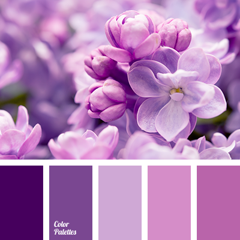
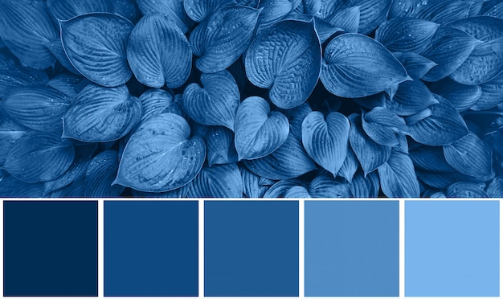
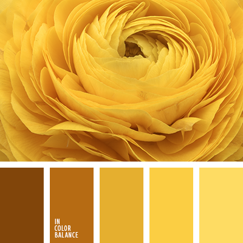
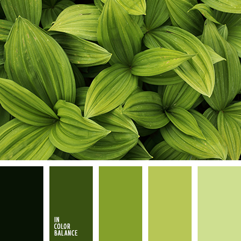
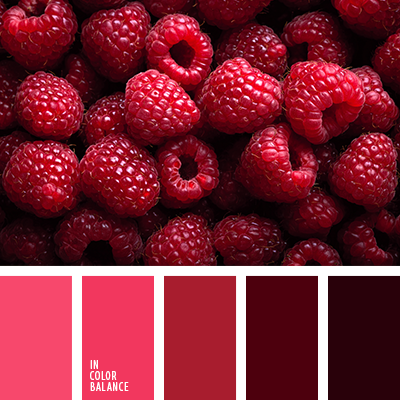
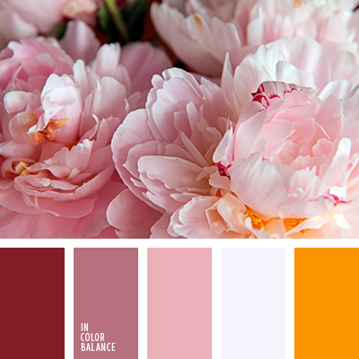
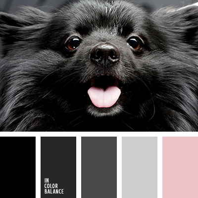

Фіолетовий
Даний колір відрізняється від інших своєю незвичністю і дивиною. Він може бути для нас як теплим, так і холодним, оскільки складається з композиції червоного і синього і кожна людина бачить в ньому свої нотки.
Багато хто стверджує, що він символізує збудження і сексуальність, але в той же час він не має такого впливу в цій сфері, як червоний, а несе більший сенс. Мало хто з нас бажають віддавати свою перевагу фіолетовому, через те, що він є важким для сприйняття і може навіть викликати депресію. Віддають перевагу фіолетові тони, часто дуже амбітні і мають творчий потенціал. Такі люди знаходяться в пошуку себе і можуть бути схильні до непостійності.
Синій
Більшість людей на питання про улюблений колір відразу ж дадуть відповідь, що це синій. Чому ж так відбувається? Синій дуже глибокий і як би затягує в свою безодню. Для кожного індивідуума ця безодня своя: проблем, думок, міркувань, і чим темніше відтінок, тим більше передумов до міркування і спробам знайти істину
Однак, синя палітра є заспокійливої для нашої нервової системи, допомагає на якийсь час забути про свої проблеми і розчинитися в навколишній дійсності. Відображає гармонію з одного боку і завзятість, серйозність і суворість з іншого. Синій сприймається нами як щось до кінця неусвідомлене, але інтригуюче своєю глибиною і загадковістю. Може бути недарма в багатьох фільмах і мультфільмах магів зображують одягненими в синю мантію.
Жовтий
Жовтий, в першу чергу, асоціюється у нас з теплим сонцем і, подібно сонячним променям, здатний проникати в нашу підсвідомість, допомагати долати труднощі, концентруватися і розв’язувати важкі проблеми. Якщо вам необхідно вирішити якусь завдання, саме жовтий зможе наштовхнути на потрібну думку
Хоч цей колір і вважається теплим і позитивним, він може символізувати і негативні якості, такі як уїдливість і саркастичность.
Зелений
Символізує природність і життєву енергію. Втомившись від галасливої міської суєти ми прагнемо побути в місці з найбільшою кількістю зеленого: на лузі, в лісі, в парку, щоб відновити втрачені сили і розслабитися.
Позначає стабільність і непохитність, таку ж як у нашій матінки природи. Часто використовується в рекламах, оскільки ми підсвідомо приймаємо цей колір як щось природне, природне. Зелений надає заспокійливу дію і може негативно впливати на психіку деяких людей тим, що під його впливом вони втрачають прагнення до своєї мети і стають апатичними. Саме з цієї причини зелені відтінки не варто використовувати на робочому місці.
Червоний
Був в числі улюблених у наших предків. Він символизировался з вогнем і кров’ю і висловлював пристрасті і прагнення, рішучість і готовність боротися. Червоний змушує нас підбадьоритися і почати рухатися і діяти, тому у багатьох він пов’язаний з пристрастю і любов’ю.
Надає нам впевненості і владності, однак немає необхідності їм зловживати, тому що при довгому впливі він може надати спустошує ефект. Він допоможе в швидкі терміни вирішити важливі питання і навіть сприяє внутрішніх змін в організмі, таким як вироблення адреналіну і поліпшення роботи м’язів.
Рожевий
Рожевий сприймається нашою підсвідомістю як доброзичливий, ніжний, мрійливий і романтичний.
Він навіває на приємні і злегка збуджують душу думки, оскільки має нотки червоного, проте відрізняється більшою невпевненістю. Мрії мріями, але підкорити світ з ним неможливо.
Чорний
Багато хто вважає його символом жалоби і непоказного, однак за цим негативними характеристиками криється великий потенціал. Цей колір, як не дивно, часто вибирають творчі люди, на тій підставі, що він є виражає, котрі кричать, але в той же час не агресивним. За чорним можуть ховатися широкі можливості, які розкриваються поступово. Це символ впевненості в собі, спраги досягнення мети і самоствердження. Субкультура металістів вибрала чорний своїм основним, оскільки він дозволяє прагнути до своїх цілей не привертаючи увагу оточуючих і висловлює глибокі внутрішні переживання, які людина прагне приховати від навколишнього світу.